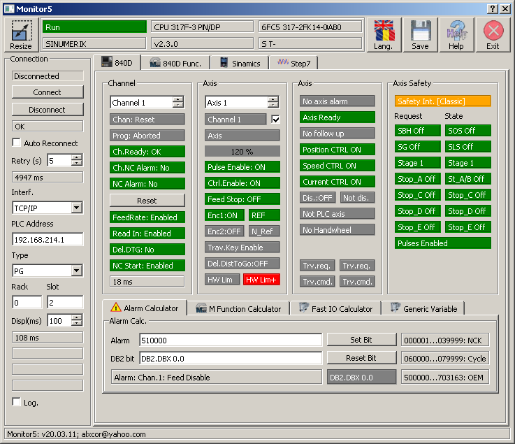
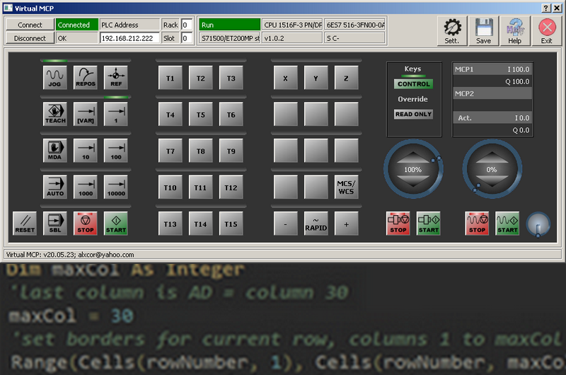
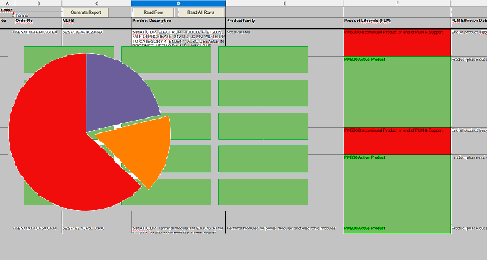
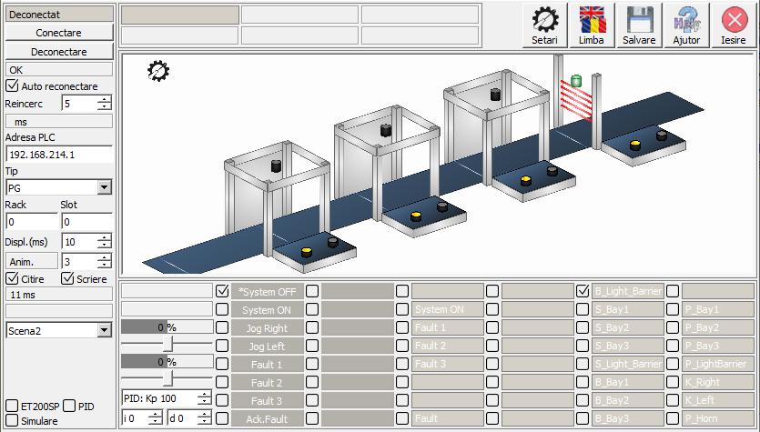

Cam740
'Cam740' may be used for diagnosis of Sinumerik 840D, Sinamics or Step7 systems connected via Ethernet, Profibus, MPI.
No installation is needed, the program is portable and saves all data in .INI files in own folder.
'Cam740' is using Qt and Snap7 under LGPL3 License to communicate with the Sinumerik/Sinamics/Step7 equipment. The project may also use ProDave interface if the DLL file is provided by user and a license is activated.
Virtual MCP
'Virtual MCP' is a very small emulator of the SINUMERIK machine control panel (MCP). It may be used to remote control a real SINUMERIK system, e.g. for remote training.
No installation is needed, the program is portable and saves all data in .INI files in own folder.
'Virtual MCP' is using Qt and Snap7 under LGPL3 License to communicate with the Sinumerik/Sinamics/Step7 equipment. The project may also use ProDave interface if the DLL file is provided by user and a license is activated.
sparesNet
'sparesNet' is a portable application, written in node.js, for checking the availability of Siemens spare parts using product information from IndustryMall web pages.
Actual version, using electron and puppeteer-in-electron, is in test phase.

Cam410
'Cam410' is a series of small simulators that can be used, for example, in Step7/TIA trainings. One simulator is for the Step7 "training conveyor", another one for Safety Integrated "training production unit", etc.

Create MyHMI /3GL
'Create MyHMI /3GL' can be used to create HMI extensions for the SINUMERIK 840D sl and SINUMERIK ONE or stand-alone user interfaces for SINUMERIK 840D sl, SINUMERIK ONE, and SINUMERIK MC.
SINUMERIK Create MyHMI /3GL allows high-level language applications to be developed in the C++ programming language in conjunction with Qt for SINUMERIK Operate on SINUMERIK PCU 50.5, SIMATIC IPC427E or IPC477E, and on SINUMERIK NCU 7x0.
Here are some small code samples used to monitor variables (using a dynamic graph) or to log alarms...